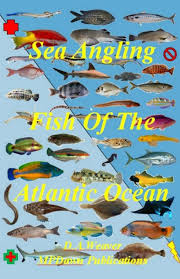

The Atlantic blue marlin (Makaira nigricans) is a species of marlin endemic to the Atlantic Ocean. It is closely related to, and usually considered conspecific with, the Indo-Pacific blue marlin, then simply called blue marlin. Some authorities still consider both species distinct.
Atlantic white-sided dolphins are found in the temperate waters of the North Atlantic Ocean. In the United States, they are found off the coast of North Carolina to Maine.
They are named after their distinctive yellowish-tan streak on their sides.
Atlantic white-sided dolphins, like all marine mammals, are protected under the Marine Mammal Protection Act.
The North Atlantic right whale (Eubalaena glacialis) is a baleen whale, one of three right whale species belonging to the genus Eubalaena,[1] all of which were formerly classified as a single species. Because of their docile nature, their slow surface-skimming feeding behaviors, their tendencies to stay close to the coast, and their high blubber content (which makes them float when they are killed, and which produced high yields of whale oil), right whales were once a preferred target for whalers. At present, they are among the most endangered whales in the world,[6] and they are protected under the U.S. Endangered Species Act and Marine Mammal Protection Act and Canada's Species at Risk Act.
This text should wrap.
Left aligned text on all viewport sizes.
Center aligned text on all viewport sizes.
Right aligned text on all viewport sizes.
Left aligned text on viewports sized SM (small) or wider.
Left aligned text on viewports sized MD (medium) or wider.
Left aligned text on viewports sized LG (large) or wider.
Left aligned text on viewports sized XL (extra-large) or wider.
The quick brown fox jumps over the lazy dog.
The quick brown fox jumps over the lazy dog.
The quick brown fox jumps over the lazy dog.
The world is a dangerous place to live; not because of the people who are evil, but because of the people who don't do anything about it.